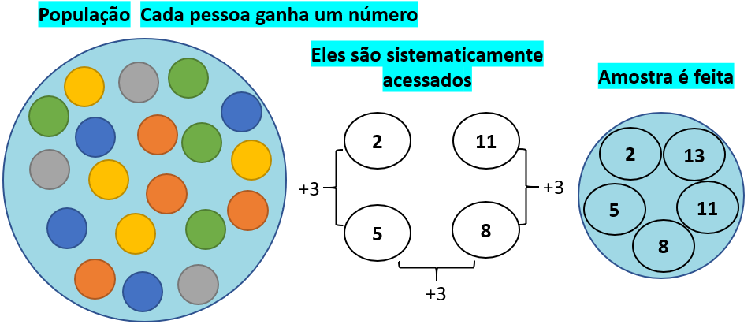
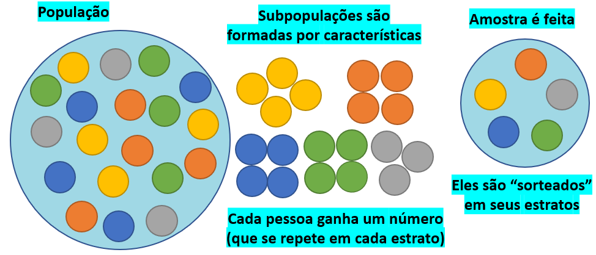
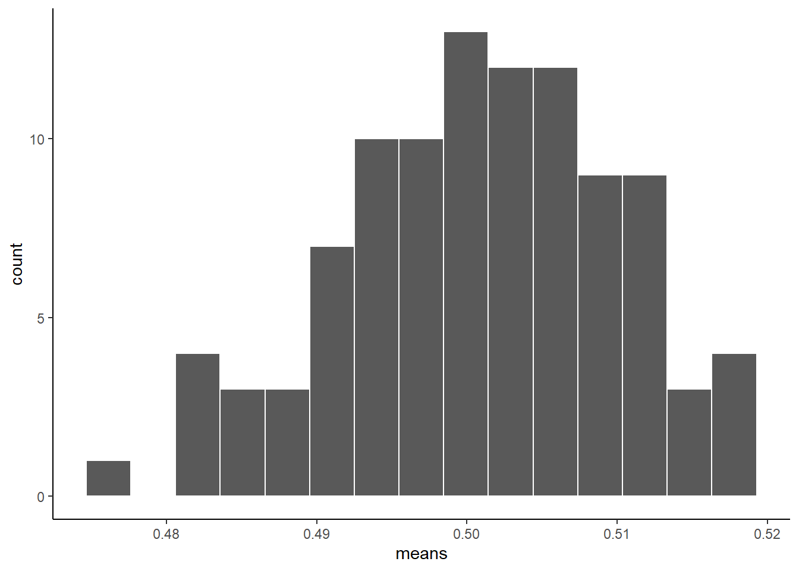
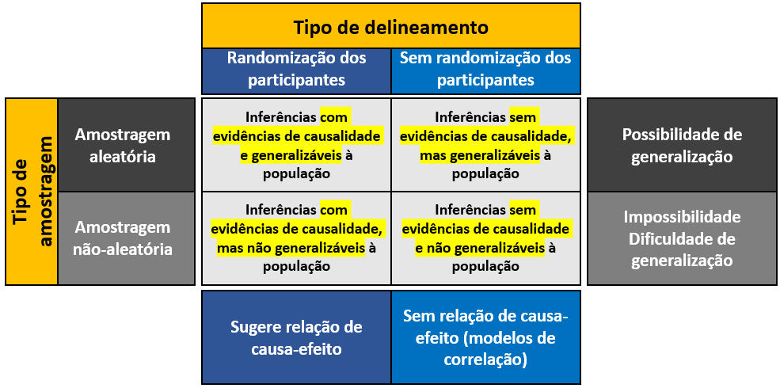

Cap. 6 Tipos de amostragem
Objetivos do capítulo
1. Apresentar aspectos relacionados à população e amostra
2. Introduzir as principais questões sobre processos de composição amostral
3. Introduzir procedimentos probabilísticos e não-probabilísticos para composição amostral
4. Apresentar o raciocínio geral do cálculo do tamanho amostral
5. Descrever como processos de amostragem, delineamento e análises são importantes em uma pesquisa
GLOSSÁRIO
População: Conjunto de objetos que apresenta, ao menos, uma característica em comum.
Amostra: Parte da população. A principal característica de uma amostra é sua representatividade da população.
Unidade amostral: Varia em função do interesse da pesquisa. Em Psicologia, quase sempre é um indivíduo, mas é possível ser uma família, uma empresa, etc.
Característica populacional: Aspecto de interesse a ser acessado ou medido.
Censo: Pesquisa em que todos os elementos da população são acessados.
Erro amostral: Diferença entre o resultado obtido na amostra e o valor verdadeiro populacional.
Ao se planejar e executar uma pesquisa, além de se ter claro os problemas científicos de interesse, é necessário eleger a população que participará do estudo. A população é determinada como todos os membros de um grupo bem definido. Dessa forma, a população é composta por um conjunto de objetos que apresenta, ao menos, uma característica em comum. Em Psicologia, com muita frequência, a população é formada por indivíduos. No entanto, a depender da área, ela pode ser formada por empresas, árvores, animais, etc.
A população pode ser classificada como finita ou infinita e, a depender de alguns delineamentos de pesquisa, também pode ser entendida como população-alvo ou população externa. Em relação à população ser finita ou infinita, estudantes de métodos quantitativos ou pacientes que um psicólogo atende no ano atual ilustram uma população finita. Por contraste, nascimentos em uma cidade, produção de uma máquina ou horas de duração que uma lâmpada apresenta demonstram uma população infinita. A população externa é definida como todos os indivíduos que se deseja generalizar os resultados de uma pesquisa, tal como brasileiros adultos, enquanto a população alvo são aqueles que a pesquisa tem maior capacidade inferencial, tal como adultos do Estado do Rio de Janeiro.
Quando um estudo é feito considerando todos os participantes de interesse, ele é chamado de censitário. Entretanto, há muitas situações em que isso é impossível, como visto anteriormente. Mesmo quando possível, o custo, o acesso e o tempo necessários para uma pesquisa deste tipo tendem a impossibilitar sua execução. Para resolver este problema, é necessário reunir um conjunto menor da população e, neste novo grupo - chamado de amostra - fazer a pesquisa.
Apesar desses conceitos parecerem distantes, isso é feito no dia a dia de todas as pessoas. Em exames médicos, não se retira todo o sangue do corpo para verificar algumas características específicas. Da mesma maneira, toma-se apenas um pouco de vinho para verificar sua qualidade ou, quando se cozinha uma sopa, é bem típico provar apenas uma colher dela para checar se o tempero está adequado ou não.
Em estatística, a área da Amostragem é a que se ocupa da composição de uma amostra e dispõe de diferentes técnicas e procedimentos. A composição da amostra depende de critérios de qualidade e quantidade que, sob formato de perguntas, transformam-se nas seguintes questões que devem ser respondidas antes da pesquisa:
- Qual tipo de amostragem será utilizada (qualidade) e
- Quantos elementos serão necessários para compor a amostra (quantidade)?
Em relação ao tipo (também chamado de Plano amostral), uma amostra pode ser composta por métodos probabilísticos e não-probabilísticos. Métodos probabilísticos são aqueles em que a seleção dos participantes ocorre de maneira aleatória, ou seja, de uma forma que cada elemento da população tenha uma probabilidade conhecida de fazer parte da amostra. Por oposição, métodos não-probabilísticos ocorrem por uma escolha deliberada dos elementos da amostra.
Métodos probabilísticos têm clara vantagem em comparação aos não-probabilísticos. Uma vez que a amostra que será composta terá, em proporção, todas as características qualitativas e quantitativas da população, os participantes do estudo representam adequadamente a população e, com isso, processos de generalização tornam-se mais adequados. No entanto, a composição de uma amostra com tal propriedades impõe dificuldades, uma vez que depende do conhecimento populacional, bem como de um investimento em tempo e recursos que tende a ser elevado.
Atenção: Pesquisas que contam com amostras representativas permitem que os resultados obtidos sejam generalizados à população de onde a amostra foi extraída.
Amostras formadas por seleção não-probabilística são pouco capazes de estender os resultados obtidos à população de interesse. No entanto, esse tipo de metodologia é mais rápida e menos custosa do que a probabilística. Em situações em que se desconhece a população de interesse ou quando não há necessidade de generalizações, ela é uma opção adequada. A tabela a seguir apresenta algumas vantagens, desvantagens e aplicações de ambas as metodologias.
| Amostragem probabilística | |
|---|---|
| Vantagem | - Seleção aleatória. -Elimina o erro sistemático e o viés de seleção. - Representa bem as características populacionais de interesse. -Permite generalização à amostra. |
| Desvantagem | - É necessário conhecer e definir bem a população de interesse. - Custosa. - De difícil acesso, as vezes. - Tende a ser pouco atualizada para mudanças de nomes (ex: casamento) ou mudanças geográficas. - Há situações em que é impossível (ex: verificar a população de usuários de crack). |
| Exemplo | Quase sempre, pesquisas em que há um valor financeiro associado ou estatísticas oficiais -Pesquisas de intenção de votos -Pesquisa epidemiológica sobre saúde mental no Brasil |
| Amostragem não-probabilística | |
| Vantagem | - Relativamente fácil de se planejar e executar. - Tende a ser mais barata do que métodos probabilísticos. |
| Desvantagem | - Costuma representar mal a população. - Baixa ou ausente capacidade de generalização |
| Exemplo | - Pesquisas feitas com coleta de dados online |
6.1 Amostragem aleatória simples
É o processo mais elementar. O método se fundamenta no princípio de que todos os membros de uma população têm a mesma probabilidade de serem incluídos na amostra. Para fazer este tipo de procedimento, cada participante da população “recebe” um número. Este número é sorteado em um procedimento que, as vezes, é chamado de loteria. A amostra é formada pelos participantes sorteados.

Vantagens: Evita o erro sistemático e viés de seleção. Tende a ser simples de se planejar e comunicar aos outros.
Desvantagens: Tende a ter execução complexa e cara. Eventualmente, pode não representar bem subgrupos populacionais.
6.2 Amostragem aleatória sistemática
É uma variação da amostragem simples. Após a identificação dos participantes, um determinado critério é eleito (por exemplo, a cada 5) e a seleção segue este formato.

Vantagens: Mais rápida de se implementar do que a amostragem aleatória simples
Desvantagem: Eventualmente, pode não representar bem subgrupos populacionais. A ordenação dos participantes pode ser igual a uma ordenação existente, mas desconhecida, na população. Por exemplo, em uma lista de colégio, todos os estudantes com algum tipo de dificuldade recebem números ímpares e o critério de seleção da amostra seja feita, também, por números ímpares.
6.3 Amostragem estratificada
Neste tipo de amostragem, a população é dividida em subpopulações em função de características em comum, o que é chamado de estrato. Em seguida, cada participante recebe uma identificação dentro de seu estrato e o processo de amostragem aleatória simples é feito dentro em cada estrato. Atente que é possível que os participantes recebam os mesmos números. Por exemplo, se no estrato 1 há 100 pessoas, os números irão de 1 a 100 dentro deste estrato. Se no segundo estrato há também 100 pessoas, os participantes deste estrato também receberão números de 1 a 100. Com muita frequência, as características de interesse na população são desbalanceadas e, com isso, os estratos e a amostra também serão desbalanceados. Por exemplo, se há cerca de 80% de mulheres em uma determinada população, é esperado que a amostra tenha proporção similares de mulheres.

Em uma pesquisa de nosso grupo, este tipo de amostragem foi feita. O nome da pesquisa é Depression and Anxiety Symptoms in a Representative Sample of Undergraduate Students in Spain, Portugal, and Brazil. Em alguns capítulos, a base desta pesquisa é utilizada.
Vantagens:
Desvantagem:
6.4 Amostragem por conglomerados
Neste tipo de amostragem, a população encontra-se localizada - naturalmente - em conglomerados. Estes conglomerados podem ser ruas, bairros ou empresas, por exemplo e são assumidos como heterogêneos. Os conglomerados recebem identificações que, por sua vez, são sorteadas. Todos os participantes dos conglomerados sorteados devem ser acessados.

Vantagens: Quando a identificação dos elementos da população é difícil, os conglomerados aparecem como solução. A população já está dividida naturalmente.
Desvantagens: Os estratos não serem homogêneos entre eles.
6.5 Amostragem por conveniência
Neste tipo de amostragem, a amostra é feita pelos participantes que o pesquisador tem maior acesso.
Vantagens: Fácil de se coletar, acessível e tende a crescer rapidamente.
Desvantagens: Pode representar mal a população e, consequentemente, ter viés. Apesar de possível, a generalização é desaconselhada.
6.6 Amostragem por auto-seleção
Neste tipo de amostragem, os participantes voluntariamente solicitam participar da pesquisa. Isso tende a acontecer em pesquisas em que a coleta de dados é feita online (ex: google survey ou survey monkey) e também em estudos sobre novos medicamentos.
Vantagens: Relativamente mais fácil de se coletar.
Desvantagem: similar à amostragem por conveniência.
6.7 Amostragem intencional
Neste tipo de amostragem, o pesquisador decide quem irá compor a amostra. É bem frequente em estudos psicométricos de validação de testes psicológicos. Neste tipo de pesquisa, existe uma etapa em que especialistas são convidados para opinar sobre características dos testes.
Vantagens: Relativamente fácil de se identificar os juízes.
Desvantagens: similar à amostragem por conveniência. Além disso, o tamanho amostral tende a ser baixo.
6.8 Amostragem por bola de neve
Neste tipo de amostragem, o pesquisador identifica um participante de interesse que, consequentemente, indica outros participantes para pesquisa. Por exemplo, caso deseje-se avaliar a saúde mental de usuários de cocaína, o pesquisador poderia identificar a primeira pessoa a ser avaliada que, em seguida, indicaria outras possíveis participantes.
Vantagens: Pode ser implementada de maneira fácil e o crescimento amostral tende a ocorrer rapidamente.
Desvantagens: similar à amostragem por conveniência.
6.9 Amostragem por quotas
Este tipo de amostragem tende a ter um rigor mais elevado dentro das técnicas não-probabilísticas. Na amostragem por quotas (ou cotas), o pesquisador define classes populacionais e, em seguida, determinar a proporção da população para cada classe. Pode ser utilizada em situações em que não se tem muitas informações sobre características populacionais para fazer uma técnica probabilística, mas sabe-se o suficiente para criar classes. Eventualmente, pesquisas eleitorais e análise de mercado podem contar com esta técnica.
Vantagens: Pode ser implementada de maneira fácil e tende a ser executada rapidamente. Apresenta um maior rigor dentro do conjunto dos métodos não-probabilísticos.
Desvantagens: similar à amostragem por conveniência.
6.10 O cálculo do tamanho amostral
Após decidir qual é o tipo de plano amostral, é necessário que o pesquisador defina quantos participantes irão compor a amostra. Se relativamente poucos participantes de uma população forem amostrados, os resultados podem distorcer o fenômeno investigado. Por contraste, se uma quantidade maior do que a necessária de participantes for amostrada, este excesso pode representar custos desnecessários e também distorcer as conclusões de algumas análises que serão apresentadas no decorrer do livro.
Existem diferentes formas de se realizar o cálculo do tamanho da amostra. No entanto, todas as maneiras costumam depender das seguintes condições:
- Da variabilidade do fenômeno a ser investigado (maior variabilidade, maior amostra).
- Do interesse do pesquisador.
- Do tamanho da população.
- Do nível de confiança estatística.
- Do erro máximo que o pesquisador deseja correr.
- Do tipo de amostragem.
- Das possíveis perdas de elementos da amostra.
Uma das principais características da população que entra em cena para computar um tamanho amostral é a variabilidade do fenômeno a ser investigado. Populações homogêneas tendem a precisar de amostras com menos elementos. Por oposição, fenômenos heterogêneos solicitam que o tamanho amostral seja maior. A variabilidade pode ser determinada pela literatura prévia e estudo piloto.
O interesse do pesquisador pode ser apenas descritivo ou guiado pela execução de testes de hipótese. Quando descritivo, há um sistema fechado de equações que auxiliam no cálculo amostral. Quando teste de hipóteses são desejados, quase sempre, pesquisadores contam com heurísticas acadêmicas e também fazem um cálculo chamado “de poder do teste.” Este cálculo visa otimizar o tamanho da amostra para que nem erros do tipo 1 ou 2 ocorram.
O tamanho populacional é uma importante característica para definição da amostra. Para populações pequenas, a amostra abrange quase que a totalidade dos elementos. Em populações maiores isso não costuma ocorrer. A relação entre tamanho populacional e tamanho amostral costuma ser apresentado por uma função logarítmica, tal como descrito abaixo.

O nível de confiança é a probabilidade que o intervalo estimado contenha o parâmetro populacional.
O erro máximo que o pesquisador deseja correr é materializado pela diferença esperada entre o parâmetro da população e o resultado a ser obtido pela pesquisa. Com frequência, a margem de erro varia de 3 a 5% Os conceitos de nível de confiança e erro são conectados.
O tipo de amostragem e as possíveis perdas de elementos da amostra também impactam o tamanho amostral. Frequentemente, amostras são calculadas assumindo a Amostragem Aleatória Simples e, em seguida, os números são ajustados por tipos específicos. Finalmente, perdas amostrais são esperadas e tenta-se acrescentar este número ao plano amostral antes da coleta de dados.
É possível unir todos os conceitos em equações específicas para o cálculo do tamanho amostral. As fórmulas variam e seria pouco efetivo tentar apresentar todas as fórmulas ou eleger uma ou outra equação de maior uso para colocar nesta parte. Desta maneira, deixo o artigo intitulado “A lógica da determinação do tamanho da amostra em investigações Epidemiológicas” como principal referência deste tópico.
6.11 Amostragem e sua relação com os resultados
GLOSSÁRIO
Validade externa: O grau ou a extensão em que os resultados de um estudo podem ser generalizados para outras pessoas e grupos.
Riscos à validade externa: Amostra não representativa da população de interesse, seleção dos participantes de maneira artificial ou inadequada, tamanho amostral inadequado.
Viés de não-resposta: Viés que ocorre quando participantes selecionados para participar da pesquisa não a respondem. Pode ocorrer tanto em amostragens probabilísticas como não-probabilísticas, especialmente em situações em que o tema é social ou afetivamente carregado.
Quando uma pesquisa é feita, raramente sua finalidade é apenas descritiva, ou seja, de detalhamento dos resultados somente para os participantes amostrados. Com muita frequência, o interesse do pesquisador é conseguir generalizar os resultados obtidos pela amostra à população que ela representa. A capacidade de generalizar os resultados é chamado de Validade externa de uma pesquisa e depende pesadamente do tipo de amostragem definido. Na verdade, toda mecânica por detrás de análises inferenciais assume que os dados vieram de uma amostra aleatória (representativa). Quando amostras não representativas são acessadas, vieses são esperados.
Um exemplo bastante ilustrativo é o relatório intitulado “The Hite Report”, de Shere Hite, que foi conduzido e publicado na década de 1970 nos Estados Unidos. Este trabalho visou oferecer uma radiografia sobre a sexualidade e a vida conjugal feminina das norte americanas e se tornou um best-seller quase que imediatamente após publicado.

Nesta pesquisa, Shere Hite enviou carca de 100.000 cartas para mulheres localizadas em todos os Estados Unidos perguntando questões sobre “Satisfação conjugal” e “Traição.” Os resultados indicaram que 98% das mulheres estavam insatisfeitas em seus casamentos e que 75% delas estavam tendo ou tiveram relações extraconjugal enquanto casadas.
Quando o trabalho foi cuidadosamente analisado, foi identificado que dos 100.000 questionários enviados, cerca de 4% retornou. Esse cenário deixou claro que, além da amostra não ter sido representativa da população de mulheres americanas, os resultados foram pesadamente influenciados pelo viés de não-resposta. Em outras palavras, é possível sugerir que apenas o grupo de pessoas insatisfeitas respondeu ao questionário e seus resultados são significativamente diferentes daquele grupo que não foi representado, que é a maioria e, provavelmente, formado por pessoas felizes em seus casamentos.
6.12 Amostragem, delineamento e generalização
GLOSSÁRIO
Validade interna: Grau em que os resultados de um estudo possam ser atribuídos ao delineamento e não a erros ou outros fatores não controlados.
Riscos à validade interna: Tipo de amostragem utilizada, ausência de randomização dos participantes, ausência de duplo-cego, maturação e histórico dos participantes.
É bastante típico que pesquisadores iniciem uma pesquisa para explorar ou responder um problema específico. Em Psicologia, os problemas tendem a se dividir naqueles em que características individuais são o alvo e naqueles em que aspectos sociais recebem maior atenção. Por exemplo, explorar as características de personalidade de pessoas que decidem não ter filho (Neal & Neal, 2021), as atitudes sociais sobre a participação feminina em alguns trabalhoso (Bursztyn et al., 2018) ou a relação ente nível socioeconômico e empatia social (Piff et al., 2012), parcialmente exemplificam tais iniciativas.
Apesar dos interesses diferirem, a grande maioria dos pesquisadores tem muito cuidado na hora de eleger o delineamento da pesquisa, fazer a coleta de dados e, em seguida, analisá-los. Erros ou fragilidades metodológicas durante tais etapa podem limitar ou impossibilitar a validade dos resultados. No entanto, esta validade em questão é chamada de Validade interna, que se relaciona majoritariamente com o nível de controle imposto durante a coleta de dados e a possibilidade de estabelecer relações entre variáveis, especialmente relações de causalidade.
Dessa maneira, assumindo que o interesse de uma pesquisa seja conseguir explicar um determinado problema científico, mas também generalizar os resultados obtidos à população, tão importante como ter um delineamento de pesquisa adequado para coletar os dados (validade interna) é ter um plano amostral que possibilite a generalização dos achados (validade externa). Não é possível maximizar, ao mesmo tempo, a validade interna e a validade externa. Entretanto, o balanceamento de ambas as condições deve ser feito em função das perguntas de pesquisa propostas.
A imagem a seguir visa integrar os conceitos de amostragem, delineamento e generalização.

Em síntese, três condições são importantes em uma pesquisa:
- O plano amostral, que indica o grau em que os resultados serão generalizáveis;
- O delineamento de pesquisa, que auxilia em verificar relacionamento entre variáveis e
- O tipo de análise estatística implementada, que como a pergunta de pesquisa será trabalhada por modelos probabilísticos.
6.13 Resumo
- Existem vários tipos de amostragem.
- A amostragem probabilística é a mais indicada quando se deseja fazer generalizações dos resultados.
- Há situações em que apenas técnicas não-probabilísticas são possíveis.
- A amostragem e o delineamento são pilares de uma pesquisa.